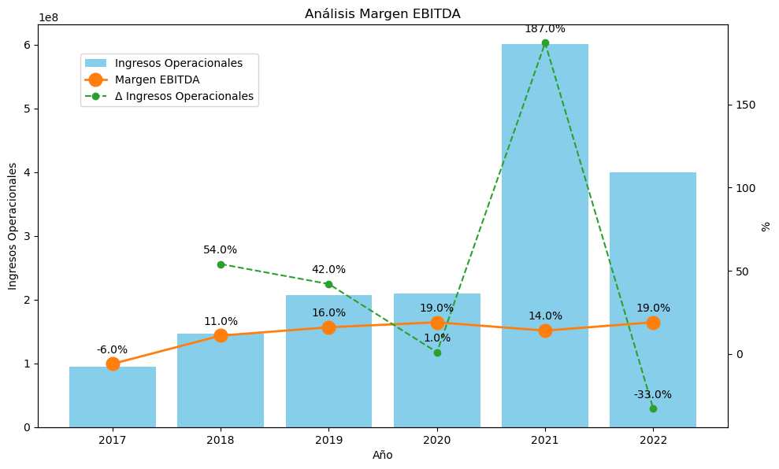

Análisis de los márgenes¶
Margen Bruto, Operacional y Neto¶
Para este gráfico se necesita lo siguiente:
Ingresos Operacionales: con valores monetarios.
Margen Bruto: con valores cómo porcentajes.
Margen Operacional: con valores cómo porcentajes.
Margen Neto: con valores cómo porcentajes.
Δ Ingresos Operacionales: con valores cómo porcentajes. Este es del análisis horizontal.
Δ Margen Bruto: con valores cómo porcentajes. Este es del análisis horizontal.
Δ Margen Operacional: con valores cómo porcentajes. Este es del análisis horizontal.
Δ Margen Neto: con valores cómo porcentajes. Este es del análisis horizontal.
El siguiente ejemplo se realizó con el archivo Margenes.csv
import pandas as pd
import matplotlib.pyplot as plt
# Cargar el archivo con los datos financieros
file_path = "Margenes.csv"
data = pd.read_csv(file_path, delimiter=";", index_col=0)
# Limpiar y preparar los datos para la visualización
# Eliminar el símbolo de porcentaje y convertir a tipo numérico
data = data.apply(
lambda x: x.str.replace("%", "").astype(float) if x.dtype == "object" else x
)
# Crear un gráfico combinado para analizar los datos financieros
fig, ax1 = plt.subplots(figsize=(10, 6))
# Configurar el eje principal para los Ingresos Operacionales usando barras
colors = plt.cm.tab20.colors # Usar la paleta de colores 'tab20'
ax1.set_xlabel(
"Año", color="black"
) # Establecer color de la etiqueta del eje x a negro
ax1.set_ylabel(
"Ingresos Operacionales", color="black"
) # Usar el primer color de la paleta para los ingresos operacionales
ax1.bar(
data.columns,
data.loc["Ingresos Operacionales"],
color="skyblue",
label="Ingresos Operacionales",
) # Crear barras para los ingresos
ax1.tick_params(
axis="y", labelcolor="black"
) # Configurar el color de las etiquetas del eje y
ax1.tick_params(
axis="x", colors="black"
) # Configurar el color de las etiquetas del eje x
# Crear un segundo eje para los porcentajes
ax2 = ax1.twinx() # Crear eje y secundario para representar los porcentajes
ax2.set_ylabel(
"%", color="black"
) # Establecer color de la etiqueta del eje y secundario a negro
# Dibujar las líneas:
(line_margen_bruto,) = ax2.plot(
data.columns,
data.loc["Margen Bruto"],
color=colors[0],
marker="o",
markersize=8,
linewidth=1,
label="Margen Bruto",
)
(line_margen_operacional,) = ax2.plot(
data.columns,
data.loc["Margen Operacional"],
color=colors[6],
marker="o",
markersize=8,
linewidth=1,
label="Margen Operacional",
)
(line_margen_neto,) = ax2.plot(
data.columns,
data.loc["Margen Neto"],
color=colors[2],
marker="o",
markersize=8,
linewidth=1,
label="Margen Neto",
)
(line_delta_ingresos,) = ax2.plot(
data.columns,
data.loc["Δ Ingresos Operacionales"],
color=colors[4],
marker="o",
linestyle="--",
label="Δ Ingresos Operacionales",
)
ax2.tick_params(
axis="y", labelcolor="black"
) # Configurar el color de las etiquetas del eje y secundario
# Eliminar las líneas de cuadrícula para un fondo limpio
ax2.grid(False) # Eliminar la cuadrícula del fondo para limpiar la visualización
# Configurar los colores de los ejes a negro
ax1.spines["bottom"].set_color("black") # Color del borde inferior
ax1.spines["left"].set_color(colors[0]) # Color del borde izquierdo
ax2.spines["right"].set_color("black") # Color del borde derecho
# Agregar las etiquetas para cada punto de los porcentajes
for line in [
line_margen_bruto,
line_margen_operacional,
]:
for x, y in zip(data.columns, data.loc[line.get_label()]):
label = f"{y}%" # Formatear el texto de la etiqueta con el valor porcentual
ax2.annotate(
label, (x, y), textcoords="offset points", xytext=(0, 10), ha="center"
) # Posicionar la etiqueta sobre cada marcador
# Agregar la leyenda fuera del gráfico para evitar obstruir los datos
fig.tight_layout() # Ajustar el layout
fig.legend(loc="upper left", bbox_to_anchor=(0.1, 0.85)) # Posicionar la leyenda
# Título del gráfico
plt.title("Análisis de los márgenes", color="black") # Establecer el título del gráfico
# Mostrar el gráfico
plt.show()

Margen EBITDA¶
Para este gráfico se necesita lo siguiente:
* Ingresos Operacionales: con valores monetarios.
* Margen EBITDA: con valores cómo porcentajes.
* Δ Ingresos Operacionales: con valores cómo porcentajes. Este es del análisis horizontal.
* Δ Margen EBITDA: con valores cómo porcentajes. Este es del análisis horizontal.
El siguiente ejemplo se realizó con el archivo MargenEBITDA.csv
import pandas as pd
import matplotlib.pyplot as plt
# Cargar el archivo con los datos financieros
file_path = "MargenEBITDA.csv"
data = pd.read_csv(file_path, delimiter=";", index_col=0)
# Limpiar y preparar los datos para la visualización
# Eliminar el símbolo de porcentaje y convertir a tipo numérico
data = data.apply(
lambda x: x.str.replace("%", "").astype(float) if x.dtype == "object" else x
)
# Crear un gráfico combinado para analizar los datos financieros
fig, ax1 = plt.subplots(figsize=(10, 6))
# Configurar el eje principal para los Ingresos Operacionales usando barras
colors = plt.cm.tab20.colors # Usar la paleta de colores 'tab20'
ax1.set_xlabel(
"Año", color="black"
) # Establecer color de la etiqueta del eje x a negro
ax1.set_ylabel(
"Ingresos Operacionales", color="black"
) # Usar el primer color de la paleta para los ingresos operacionales
ax1.bar(
data.columns,
data.loc["Ingresos Operacionales"],
color="skyblue",
label="Ingresos Operacionales",
) # Crear barras para los ingresos
ax1.tick_params(
axis="y", labelcolor="black"
) # Configurar el color de las etiquetas del eje y
ax1.tick_params(
axis="x", colors="black"
) # Configurar el color de las etiquetas del eje x
# Crear un segundo eje para los porcentajes
ax2 = ax1.twinx() # Crear eje y secundario para representar los porcentajes
ax2.set_ylabel(
"%", color="black"
) # Establecer color de la etiqueta del eje y secundario a negro
# Dibujar las líneas para Margen EBITDA, Δ Ingresos Operacionales y Δ Margen EBITDA
(line_margen_ebitda,) = ax2.plot(
data.columns,
data.loc["Margen EBITDA"],
color=colors[2],
marker="o",
markersize=12,
linewidth=2,
label="Margen EBITDA",
)
(line_delta_ingresos,) = ax2.plot(
data.columns,
data.loc["Δ Ingresos Operacionales"],
color=colors[4],
marker="o",
linestyle="--",
label="Δ Ingresos Operacionales",
)
ax2.tick_params(
axis="y", labelcolor="black"
) # Configurar el color de las etiquetas del eje y secundario
# Eliminar las líneas de cuadrícula para un fondo limpio
ax2.grid(False) # Eliminar la cuadrícula del fondo para limpiar la visualización
# Configurar los colores de los ejes a negro
ax1.spines["bottom"].set_color("black") # Color del borde inferior
ax1.spines["left"].set_color(colors[0]) # Color del borde izquierdo
ax2.spines["right"].set_color("black") # Color del borde derecho
# Agregar las etiquetas para cada punto de los porcentajes
for line in [line_margen_ebitda, line_delta_ingresos]:
for x, y in zip(data.columns, data.loc[line.get_label()]):
label = f"{y}%" # Formatear el texto de la etiqueta con el valor porcentual
ax2.annotate(
label, (x, y), textcoords="offset points", xytext=(0, 10), ha="center"
) # Posicionar la etiqueta sobre cada marcador
# Agregar la leyenda fuera del gráfico para evitar obstruir los datos
fig.tight_layout() # Ajustar el layout
fig.legend(loc="upper left", bbox_to_anchor=(0.1, 0.9)) # Posicionar la leyenda
# Título del gráfico
plt.title("Análisis Margen EBITDA", color="black") # Establecer el título del gráfico
# Mostrar el gráfico
plt.show()
